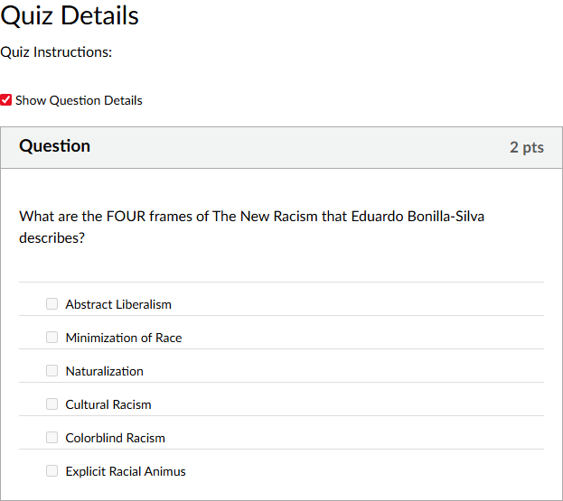

I'm a sociologist, course designer, and media producer with over a decade in higher education. My design work is grounded in a straightforward principle: learning happens when students can see how each piece of a course connects to the next. Explicit in my course design is a focus on predictability, clarity, and quality over the length of three-month courses. The projects below demonstrate how I apply that principle across asynchronous course design, content development, and educational media production.
SOC 3211W: Race and Racism in the United States
University of Minnesota · Fall 2020 · Writing-Intensive
When the University of Minnesota shifted to remote instruction in 2020, I chose to design this course as fully asynchronous rather than replicating a synchronous classroom via Zoom. The decision was deliberate: asynchronous delivery reduced technological barriers for students with unreliable internet, accommodated varied schedules, and — more importantly — allowed me to design each week's content as a self-contained learning unit rather than a series of live meetings. The course enrolled a mix of traditional undergraduates and returning adult learners, which further supported a flexible, self-paced structure.
The course was organized into weekly Canvas modules, each unlocking on a fixed schedule (Wednesdays at 5:30 PM) and closing when the next module opened. This created a consistent rhythm: students knew exactly when new material would appear, what was expected each week, and when deadlines fell. Every module followed the same internal pattern:
Capping the workload at two graded assignments per week was a conscious design choice. Asynchronous courses carry a risk of overwhelming students who lack the pacing cues of a live classroom. A predictable, bounded workload keeps the cognitive load on the content itself rather than on navigating the course structure.
Rather than recording a face-to-camera lecture, I narrated over slide presentations incorporating historical images, primary source material, and media examples. This format let me control pacing, integrate visual evidence directly into the explanation, and produce content students could pause, rewind, and revisit — advantages that a synchronous lecture doesn't offer.
Weekly reading responses asked students to summarize each author's argument, evaluate the evidence, and connect readings to each other and to broader course themes. This isn't just comprehension checking — it's a structured exercise in synthesis and critical analysis, building the exact skills the final paper demands.
Modules unlocked and locked on a weekly schedule, ensuring all students moved through the material on the same timeline. This maintained a sense of cohort progression despite the asynchronous format and prevented students from falling behind without realizing it — a common failure mode in self-paced courses.
Weekly assignments alternated between quizzes, written reflections, and paper components. Varying the format keeps engagement up and lets students demonstrate understanding in different ways, while the consistent two-per-week cap prevents assignment fatigue.
Week 04 module in Canvas. The module structure follows the consistent pattern described above: narrated lecture, followed by two graded assignments (the paper proposal and a reading response), with assigned readings listed below. The paper proposal checkpoint appears here at Week 4 — early enough to catch unfocused topics before students invest significant writing time. The reading sequence itself demonstrates content scaffolding: Barbara J. Fields's foundational argument about racial ideology is paired with a critique of race-neutral policy framing and Wilson's structural economic analysis, building the interpretive framework students need before they encounter contemporary case studies in later weeks.

Week 04 quiz question example in Canvas. The quiz question example is a straightforward question based on both the information gleaned from the reading and also reiterated in the lecture.
The primary summative assessment — an 8–10 page research paper — was deliberately broken into staged checkpoints distributed across the semester. Each stage received instructor feedback, and students were required to submit a written explanation of how their revision addressed prior comments. This design ensures the final paper reflects iterative improvement rather than a single high-stakes attempt.
One-page proposal identifying research topic, question, and goals. Assessed on feasibility and connection to course themes. Functions as an early checkpoint to catch unfocused or overly ambitious projects before students invest significant time.
Complete rough draft submitted for instructor and TA feedback. This satisfies the writing-intensive course requirement for at least one revision cycle and gives students substantive commentary on argument structure, evidence use, and writing quality while there's still time to act on it.
Revised final submission with required reflection on how feedback was incorporated. The reflection component makes the revision process visible and intentional rather than cosmetic.
The course was built around two primary outcomes: (1) developing critical thinking skills — the capacity to evaluate claims, assess evidence quality, and identify faulty reasoning — and (2) developing critical writing skills — the ability to construct and support an original argument in sustained prose. Every weekly assignment and the scaffolded paper sequence were designed to advance these two outcomes in tandem.
SOC 3251W: Sociological Perspectives on Race, Class, and Gender
University of Minnesota · Fall 2018, Fall 2024 · Writing-Intensive
This case study focuses on a single week's lecture to illustrate how I structure content delivery within a learning unit. The example — Week 5, "Discrimination and New Racism" — demonstrates how historical context, theoretical frameworks, primary source evidence, and contemporary application can be sequenced to build toward critical analysis.
The lecture moves through five distinct phases, each building on the last. The progression is designed so that students encounter new theoretical concepts only after the historical groundwork makes them intelligible, and encounter discussion questions only after they've seen the theory applied to real data.
Each lecture follows the same structural logic: establish context, introduce the analytical tool, demonstrate application with evidence, complicate the tool with new cases, and then hand the analysis to students via discussion. This consistent architecture means students can focus on the content rather than figuring out how the lecture works each week.
The Society Pages · University of Minnesota
Senior Content Producer & Section Editor · 2014–2018, 2024
The Society Pages is a public sociology platform hosted by the University of Minnesota, designed to make social science research accessible to non-academic audiences. As Senior Content Producer, I managed the full production pipeline for the site's flagship podcast series and built out its video content division. This work required translating complex scholarly arguments into engaging, accessible media — a process that is fundamentally instructional design, even when it isn't called that.
Each podcast episode began with identifying the core argument of a scholar's work and determining what a general audience needed to understand it. I then designed the interview to scaffold that understanding: opening with accessible context, introducing key concepts through conversation rather than lecture, and using concrete examples to anchor abstract claims. Post-production involved editing for clarity and pacing — decisions about what to cut, where to add context, and how to structure the episode arc are editorial design choices with direct parallels to instructional sequencing.
The pieces below represent different aspects of the production process: long-form research interviews, topical editorial writing, and multimedia content strategy.
Interview with Harvard political scientist Theda Skocpol on conservative political infrastructure. Designed to make organizational sociology accessible to a general audience by grounding abstract network theory in concrete political examples.
Conversation with sociologist Jooyoung Lee about aspiring rappers in South Central Los Angeles. This episode won Best Podcast of the Year from The Society Pages and demonstrates how ethnographic research can be communicated through narrative-driven interview design.
Interview on how elite university students understand race and meritocracy. Connects directly to my research on diversity discourse and demonstrates how to structure a conversation around a book's central thesis for listeners unfamiliar with the academic context.
Discussion of race, sport, and social policy with sociologist Douglas Hartmann. Illustrates how to make policy research engaging by anchoring it in a specific, vivid case study rather than leading with abstract findings.
Managing the podcast and editorial operation at The Society Pages involved guest coordination, interview design, audio recording and editing (Audacity, Adobe Premiere), production scheduling, contributor management, and editorial quality control across multiple content types. These are the same project management and content production skills that instructional designers use when coordinating course development with faculty authors and multimedia specialists.
Phase 1: Historical Foundation
The lecture opens with a compressed history of racial discrimination from Reconstruction through the Civil Rights Movement. This isn't background for its own sake — it establishes the baseline of explicit, codified racism that the subsequent theoretical framework (color-blind racism) defines itself against. Students need to understand what "old" racism looked like before they can grasp what's "new" about its contemporary form.